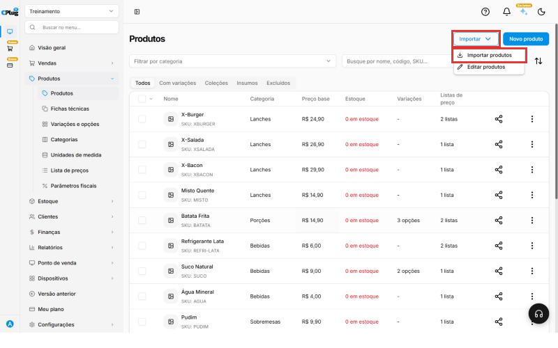
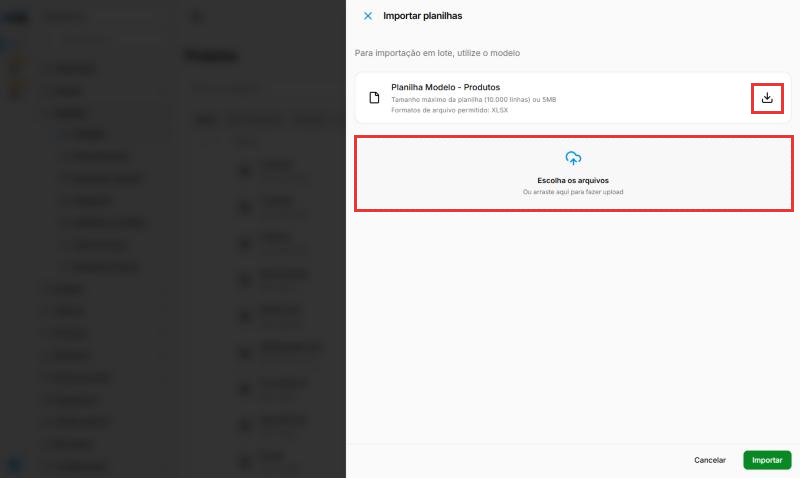
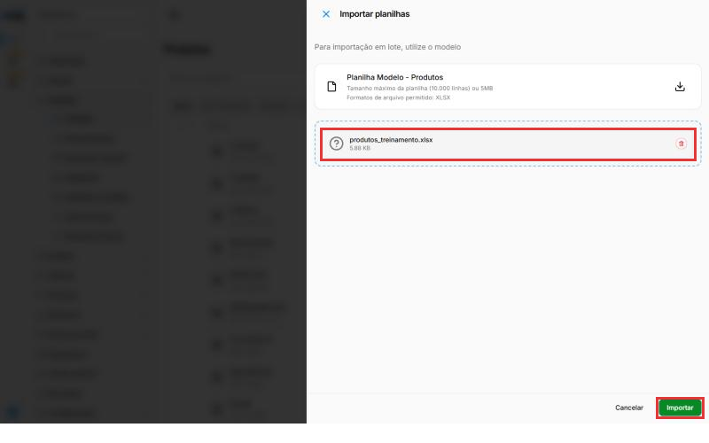
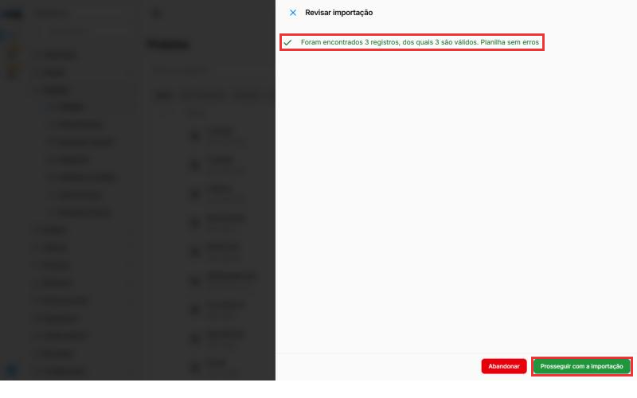
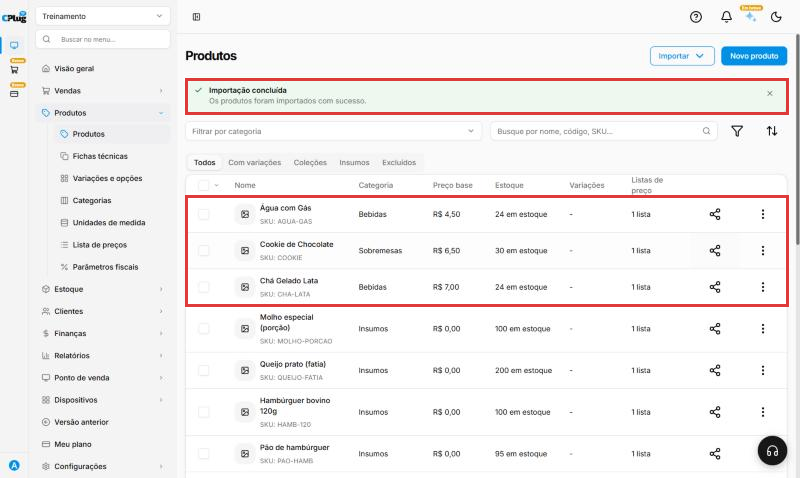
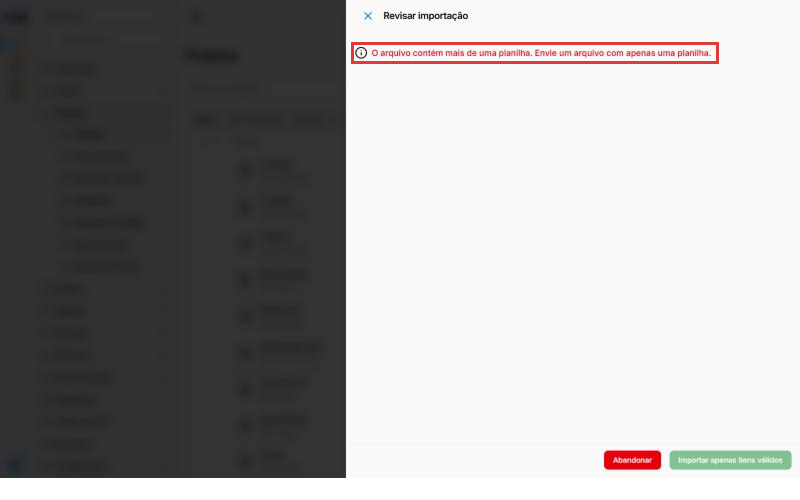

Como importar produtos de uma planilha
Tem muitos produtos para cadastrar? Em vez de criar um por um, preencha a planilha modelo do sistema e envie tudo de uma vez. Cada linha da planilha vira um produto.
Entenda o conceito
A importação é o jeito mais rápido de colocar o cardápio ou o catálogo inteiro no sistema. Ela é mais útil quando você está começando a usar a CPlug ou vindo de outro sistema e já tem a lista de produtos numa planilha.
Como o sistema lê a planilha:
- Cada coluna é um campo do cadastro do produto (nome, preço, categoria...). Por isso a primeira linha, com os nomes das colunas, não pode ser mudada.
- Cada linha é um produto novo.
- A Categoria e a Unidade de Medida são procuradas pelo nome. Se você escrever "Bebida" e no sistema estiver "Bebidas", o sistema não encontra. É por isso que elas precisam existir antes e ser escritas igual.
- O Código vira o SKU do produto: é a "identidade" dele. Por isso não pode se repetir.
O que a importação já faz por você:
- Cria os produtos com nome, categoria, preço e unidade.
- Lança o Estoque inicial no estoque. No teste, as quantidades 24, 30 e 24 apareceram na lista de produtos como "24 em estoque", "30 em estoque" e "24 em estoque".
- Coloca os produtos na Lista Padrão de preços.
- Grava os dados fiscais que estiverem na planilha, como NCM, Origem e CFOP.
O que você completa depois:
- Os grupos de ICMS e PIS/COFINS, se não vieram na planilha. Sem eles, o produto fica Pendente em Parâmetros fiscais. Veja Como configurar os dados fiscais de um produto.
- Foto, variações, adicionais e ficha técnica, pela tela do produto.
Importar ou editar? O botão Importar tem duas opções:
- Importar produtos: cria produtos novos. É o assunto deste manual.
- Editar produtos: altera produtos que já existem, usando outra planilha modelo, a Planilha Modelo - Edição de Produtos. Use essa opção para mudar preços ou dados de muitos produtos de uma vez.
Como é a planilha de edição:
| Coluna | O que é |
|---|---|
| Código * | A única obrigatória (marcada com *). É o SKU, a "identidade" do produto: use o mesmo código do cadastro para dizer qual produto vai mudar. |
| Nome, Categoria, Unidade de Medida | Os mesmos dados da tela do produto. |
| Valor de custo, Valor de venda | Custo e preço de venda. Só números e vírgula. |
| Tipo | Só aceita simples, insumo ou coleção. A célula tem uma setinha com essas três opções. |
| Ponto de Impressão, Perecível | Onde o pedido é impresso e se o produto é perecível. |
| Peso líquido KG, Peso Bruto KG | Os pesos, em quilos. |
| Estoque inicial, Estoque Mínimo, Estoque Máximo | Os dados de estoque do produto. |
Ela não tem colunas fiscais (NCM, CFOP, grupos de impostos). Para mudar esses dados em vários produtos, use a Edição em lote de Parâmetros fiscais (veja Como configurar os dados fiscais de um produto).
A planilha de edição vem com duas abas: Produtos, onde você preenche, e Listas, que guarda as opções da coluna Tipo.
Como a importação acontece: em três etapas. Primeiro o sistema confere a planilha, depois mostra o resultado para você revisar, e só então importa, em segundo plano. Enquanto isso, você pode continuar usando o sistema. O sistema faz uma importação por vez.
Antes de começar
- As categorias e as unidades de medida que você vai usar na planilha precisam já estar cadastradas. Veja Como cadastrar uma categoria e Como cadastrar uma unidade de medida.
- Você vai precisar de um programa de planilhas, como o Excel ou o Google Planilhas.
- Os dados fiscais (NCM, origem, CFOP) quem informa é o contador.
Nos prints, o quadrado vermelho mostra onde você deve clicar ou digitar.
Abra a importação de produtos
No menu do lado esquerdo, clique em Produtos e depois em Produtos. No canto de cima, à direita, clique em Importar e depois em Importar produtos.

Baixe a planilha modelo
Abre o painel Importar planilhas. Clique na setinha para baixo, ao lado de Planilha Modelo - Produtos, para baixar o arquivo.

A planilha aceita até 10.000 linhas (ou 5 MB) e precisa ser do tipo XLSX, o formato do Excel.
Preencha a planilha
Abra o arquivo baixado. A primeira linha tem os nomes das colunas: não apague nem mude essa linha. Preencha um produto por linha, a partir da linha 2.
Exemplo com três produtos (mostrando só as colunas mais usadas):
| Nome | Código | Categoria | Estoque inicial | Valor de custo | Valor de venda | Unidade de Medida | Perecível | Código NCM | Código de Origem | CFOP Padrão |
|---|---|---|---|---|---|---|---|---|---|---|
| Chá Gelado Lata | CHA-LATA | Bebidas | 24 | 2,80 | 7,00 | Unidade | Não | 22029900 | 0 | 5102 |
| Cookie de Chocolate | COOKIE | Sobremesas | 30 | 1,50 | 6,50 | Unidade | Sim | 19053100 | 0 | 5102 |
| Água com Gás | AGUA-GAS | Bebidas | 24 | 1,10 | 4,50 | Unidade | Não | 22011000 | 0 | 5102 |
O que vai em cada coluna:
- Nome: o nome do produto, como vai aparecer na venda.
- Código: um código curto e diferente para cada produto. Exemplo: CHA-LATA.
- Categoria e Unidade de Medida: escreva igual ao nome cadastrado no sistema. Exemplo: Bebidas, Unidade.
- Estoque inicial: quantas unidades você tem hoje. O sistema já lança essa entrada no estoque.
- Valor de custo e Valor de venda: quanto você paga e por quanto vende.
- Tipo Insumo, Custo com valor fixo e Perecível: responda Sim ou Não.
- Código NCM, Código de Origem e CFOP Padrão: os dados fiscais. 0 na origem quer dizer produto nacional. Confirme os códigos com o contador.
As outras colunas (código de barras, CEST, pesos, grupos de impostos, fornecedor, estoque mínimo e máximo...) são opcionais. Deixe em branco o que você não souber.
Deixe a planilha com uma aba só
Importante: apague as abas extras
A planilha modelo vem com três abas embaixo: Planilha1, Planilha2 e Planilha3. O sistema só aceita arquivo com uma aba.
Antes de salvar, clique com o botão direito em Planilha2 e escolha Excluir. Faça o mesmo com a Planilha3. Fica só a Planilha1, com os seus produtos.
Salve o arquivo no formato XLSX (no Excel, "Pasta de Trabalho do Excel"). No Google Planilhas, use Arquivo → Fazer download → Microsoft Excel (.xlsx).
Envie a planilha
Volte ao painel Importar planilhas e clique em Escolha os arquivos (ou arraste o arquivo para essa área). O nome do arquivo aparece no painel. Clique em Importar.

Aparece Importação em andamento: Aguarde, estamos validando a planilha. Isso pode levar cerca de um minuto. Você pode continuar usando o sistema enquanto isso.
Revise e confirme
Quando a conferência termina, aparece Revisar importação, com quantos produtos foram encontrados e quantos estão certos. No exemplo: Foram encontrados 3 registros, dos quais 3 são válidos. Planilha sem erros.
Clique em Prosseguir com a importação.

Se alguma linha tiver erro, o sistema avisa e mostra o botão Importar apenas itens válidos: ele importa as linhas certas e deixa as erradas de fora. Corrija as linhas erradas e importe de novo depois.
Confira os produtos
No topo da lista aparece Importando produtos e, quando termina, Importação concluída. Os produtos novos aparecem na lista com categoria, preço e estoque.
Dica: para ver os mais novos primeiro, clique no botão de ordenar (as duas setas, à direita da busca) e escolha Data de criação e Decrescente.

Pronto! Abra um dos produtos para conferir os dados. Se precisar, complete o cadastro (foto, variações, adicionais) pela tela do produto.
Depois de importar, confira os parâmetros fiscais
Abra Produtos → Parâmetros fiscais. Os produtos importados sem os grupos de ICMS e PIS/COFINS aparecem como Pendente. Use a Edição em lote para completar todos de uma vez antes de vender com nota.
Boas práticas
- Faça um teste pequeno primeiro. Importe 3 a 5 produtos, confira se ficaram certos e só depois envie a planilha completa. Um erro em 500 linhas dá muito mais trabalho para corrigir.
- Cadastre categorias e unidades antes e copie os nomes exatamente como estão no sistema.
- Use códigos simples: letras maiúsculas, números e hífen, sem espaços. Exemplo: CHA-LATA. Fica fácil de digitar e de achar depois.
- Escreva valores só com números e vírgula: 7,00, e não "R$ 7,00".
- Peça os dados fiscais ao contador antes, e já preencha na planilha. Assim os produtos chegam prontos para a nota.
- Guarde uma cópia da planilha. Ela é o registro do que foi importado e ajuda se precisar refazer algo.
- Não envie a mesma planilha de novo para corrigir algo: a importação cria produtos novos. Para mudar produtos que já existem, use Importar → Editar produtos ou a tela do produto.
Deu algum problema?
Apareceu \"O arquivo contém mais de uma planilha\"
A planilha tem mais de uma aba. Clique em Abandonar e confirme. Depois apague as abas Planilha2 e Planilha3, salve e envie de novo (veja o passo Deixe a planilha com uma aba só).

Diz que já existe uma importação em andamento
O sistema faz uma importação por vez. Espere a atual terminar. Se ela travou ou você desistiu, abra Importar → Importar produtos e clique em Abandonar.
Algumas linhas ficaram com erro
Confira se a Categoria e a Unidade de Medida estão escritas igual ao cadastro, se o Código não se repete e se os valores são números. Corrija e importe só essas linhas de novo.
Preciso mudar o preço de muitos produtos de uma vez
Para isso existe a opção Importar → Editar produtos, que altera produtos que já existem, com a Planilha Modelo - Edição de Produtos. Não use a Importar produtos para isso: ela cria produtos novos. Para mudar o preço de uma lista de preços específica, use o Atualizar em lote da lista (veja Como criar uma lista de preços).
Importei, mas o produto aparece como Pendente nos parâmetros fiscais
A planilha não trouxe os grupos de ICMS e PIS/COFINS. Complete em Produtos → Parâmetros fiscais, de preferência com a Edição em lote.
O aviso \"Importação concluída\" não some da tela de produtos
É só um aviso: os produtos já foram importados e podem ser usados normalmente. Clique no X, à direita do aviso, para fechá-lo.
Relacionados: Como cadastrar um produto · Como configurar os dados fiscais de um produto · Como dar entrada no estoque
importar produtos planilha excel xlsx importação em massa em lote cadastrar vários produtos de uma vez planilha modelo modelo de importação subir planilha upload estoque inicial ncm cfop código de origem abas mais de uma planilha erro importar apenas itens válidos editar produtos planilha de edição migrar de outro sistema sku pendente fiscal